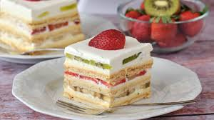

Istući čvrst snijeg od bjelanjaka, dodati šećer i jabučni ocat te sve dobro izmiksati. Peći koru oko 1 sat na 150°C dok ne dobije laganu žućkastu boju. Ohlađenu koru prerezati na 3 dijela.
Žumanjke izmiksati sa šećerom, dodati brašno i vanilin šećer. Smjesu ukuhati u zagrijanom mlijeku dok se ne zgusne. U ohlađenu kremu dodati margarin i dobro izmiksati. Posebno izraditi slatko vrhnje.
Na koru staviti kremu, zatim voće (banane poprskane limunovim sokom), pa sloj slatkog vrhnja. Postupak ponoviti sa sve tri kore. Na kraju cijelu tortu premazati vrhnjem i ukrasiti po želji.